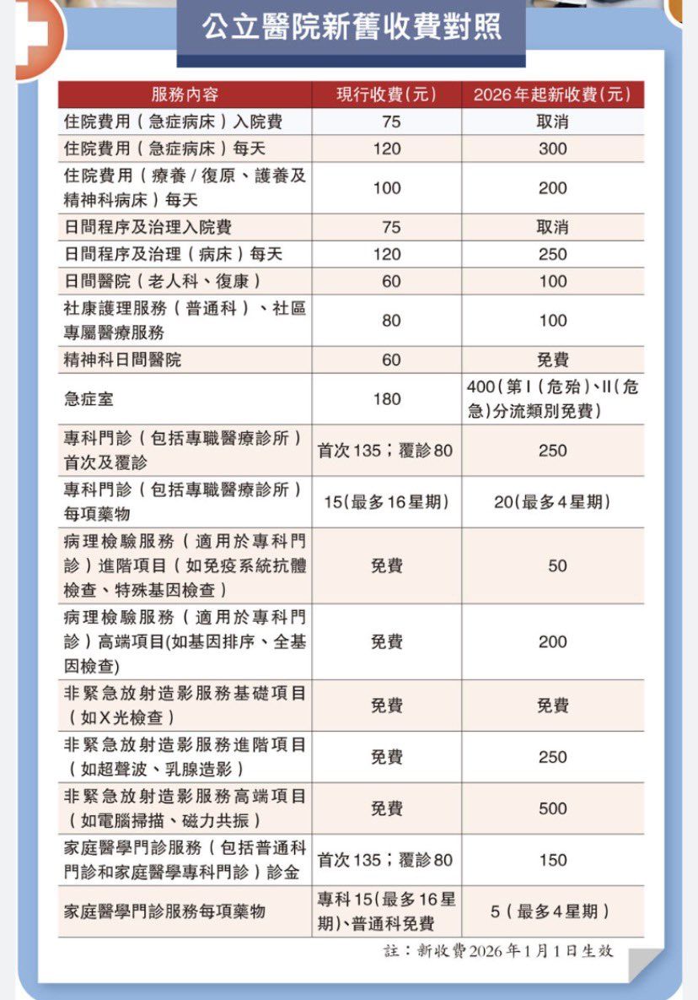

RedFox（2代目）
@FoxRed695449
@AsiaFinance 搞得像是香港以前医疗不收费一样😅
虽然涨价是不好
但造谣的更好笑

亚洲金融 Asia Finance
@AsiaFinance
香港。这是真的吗？退步这么快？2026年第一天开始，香港特区政府给市民送来大礼：要取消免费医疗了，改成每人最高负担1万港币。这政策出来大家怎么看？所有收费项目(自费药物除外)，设每年$10,000上限，超过部分可豁免。说是香港的公营医疗系统并未取消，而是进行了“优化”。
https://t.co/BHiCeIU6uH